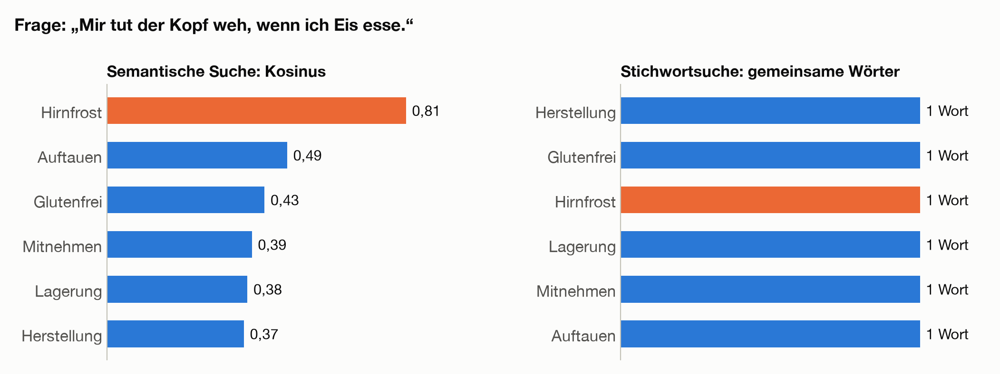
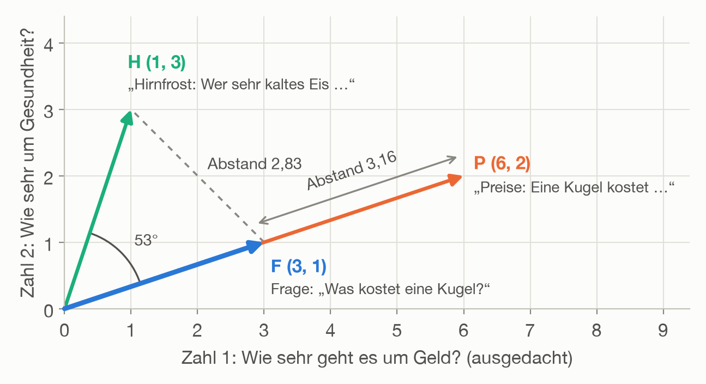
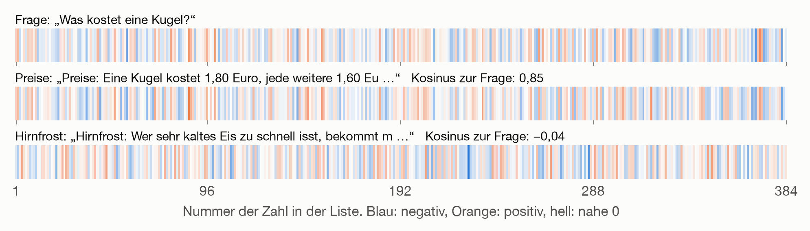
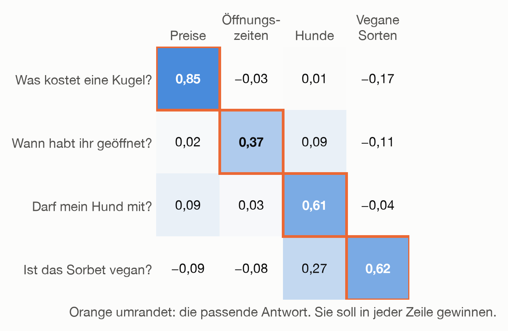
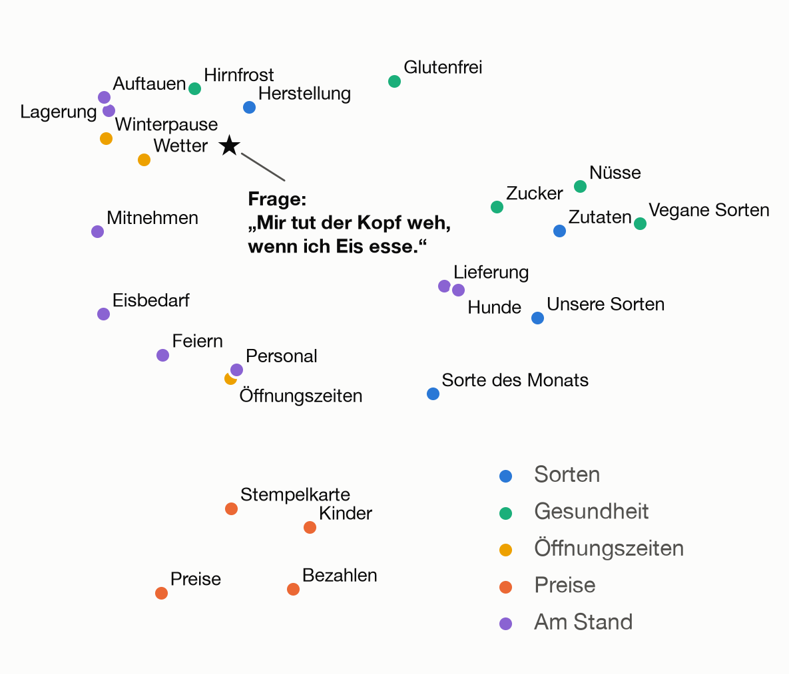
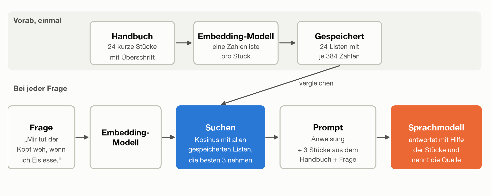
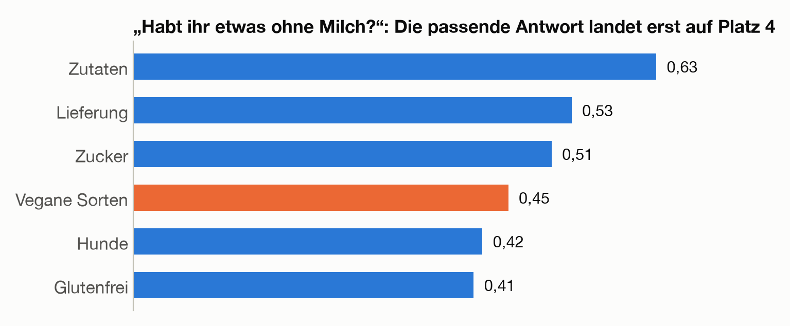

Nach diesem Kapitel kannst du …
- erklären, warum eine Suche nach Bedeutung mehr findet als eine Suche nach Stichwörtern.
- in eigenen Worten beschreiben, wie ein Computer die Ähnlichkeit zweier Texte misst.
- den Ablauf von RAG skizzieren und sagen, warum Antworten damit überprüfbar werden.
- typische Schwachstellen nennen und einschätzen, wann du genauer hinschauen solltest.
Kästen „Für Neugierige“ enthalten Rechnungen und Hintergründe. Du kannst sie überspringen, ohne den Faden zu verlieren.
Zwei Arten von Modellen, die in diesem Kapitel zusammenarbeiten:
| Sprachmodell (Kapitel 2) | Embedding-Modell (dieses Kapitel) | |
|---|---|---|
| Eingabe | der bisherige Text | ein kurzer Text, etwa eine Frage oder ein Absatz |
| Ausgabe | Wahrscheinlichkeiten für das nächste Token | eine Zahlenliste für den ganzen Text |
| Wozu | Text erzeugen | Texte vergleichen, suchen, sortieren |
Alle Ähnlichkeitswerte in diesem Kapitel sind echt. Sie wurden mit einem frei verfügbaren Embedding-Modell berechnet, das auch Labor 3 verwendet.
1. Suchen nach Bedeutung
Der Eisverkäufer hat ein Handbuch für seinen Stand geschrieben: 24 kurze Abschnitte über Sorten, Preise, Öffnungszeiten und Allergien. Es ist wie alle Daten im Workshop erfunden. Ein Kunde fragt:
Mir tut der Kopf weh, wenn ich Eis esse.
Kurz überlegen: Du sollst die Antwort im Handbuch finden. Welche Wörter würdest du in eine Suchmaske eintippen?
Auflösung
Im Handbuch steht die Antwort unter „Hirnfrost“:
Hirnfrost: Wer sehr kaltes Eis zu schnell isst, bekommt manchmal kurz stechende Kopfschmerzen. Langsam essen hilft.
Wer das Wort „Hirnfrost“ nicht kennt, sucht vermutlich nach „Kopfschmerzen“ oder „Kopf“ und hofft auf einen Treffer. Ein Mensch weiß sofort, dass „Kopf tut weh“ und „Kopfschmerzen“ dasselbe meinen. Eine Stichwortsuche weiß das nicht.
Eine Stichwortsuche zählt, wie viele Wörter der Frage in einem Abschnitt vorkommen. Füllwörter wie „der“ oder „ich“ lässt sie weg. Im Hirnfrost-Abschnitt findet sie nur „Eis“, denn „Kopf“ ist nicht „Kopfschmerzen“, und „esse“ ist nicht „isst“. Das Wort „Eis“ steht aber in sieben Abschnitten, und alle liegen gleichauf.
Die semantische Suche dagegen setzt „Hirnfrost“ mit großem Abstand an die Spitze:

So geht es mit vielen Fragen, die Menschen tatsächlich stellen:
| Frage | Im Handbuch steht | Stichwortsuche | Semantische Suche |
|---|---|---|---|
| Kann ich mit dem Handy bezahlen? | „… kontaktlos mit dem Smartphone“ | findet es über „bezahlen“ | findet es (0,80) |
| Darf mein Hund mit? | „Hunde sind willkommen.“ | findet nichts | findet es (0,61) |
| Bekomme ich eine Kugel umsonst? | „… ist die nächste Kugel gratis“ | wählt „Zucker“ | findet es (0,51) |
| Do you have vegan ice cream? | „Alle Fruchtsorbets sind vegan …“ | findet es über „vegan“ | findet es (0,51) |
Die Zahlen in Klammern messen die Ähnlichkeit, 1 wäre das Höchste. Wie sie entstehen, zeigen die nächsten beiden Abschnitte.
Merke: Die Stichwortsuche vergleicht Buchstaben. Die semantische Suche vergleicht Bedeutungen.
2. Ein Text, ein Pfeil
Die Idee aus Kapitel 2 lässt sich auf ganze Texte übertragen: Jeder Text bekommt eine Liste von Zahlen, sein Embedding. Texte mit ähnlicher Bedeutung sollen ähnliche Listen bekommen.
Zum Verstehen genügen zwei Zahlen pro Text. Die erste soll messen, wie sehr es um Geld geht, die zweite, wie sehr um Gesundheit. Diese Werte sind ausgedacht:
| Text | Zahl 1: Geld | Zahl 2: Gesundheit | |
|---|---|---|---|
| F | Frage: „Was kostet eine Kugel?“ | 3 | 1 |
| P | Abschnitt „Preise: Eine Kugel kostet 1,80 Euro …“ | 6 | 2 |
| H | Abschnitt „Hirnfrost: Wer sehr kaltes Eis …“ | 1 | 3 |
Zwei Zahlen sind ein Punkt in einem Koordinatensystem, wie auf einer Landkarte. Zeichnet man vom Nullpunkt einen Pfeil zu diesem Punkt, erhält man einen Vektor:

Der Preise-Abschnitt zeigt in genau dieselbe Richtung wie die Frage, sein Pfeil ist nur länger, weil er mehr über Geld sagt. Der Hirnfrost-Abschnitt zeigt in eine ganz andere Richtung. Für die Suche zählt also die Richtung, nicht die Länge.
Echte Embeddings funktionieren genauso, nur mit viel mehr Zahlen. Das Modell aus diesem Kapitel macht aus „Was kostet eine Kugel?“ eine Liste mit 384 Zahlen. Anders als im ausgedachten Beispiel bedeutet keine dieser Zahlen etwas für sich allein. Bedeutung hat nur das Muster aller 384 Zahlen zusammen. Sichtbar wird das, wenn man jede Zahl als Farbstreifen zeichnet:

Einen Pfeil mit 384 Richtungen kann sich niemand vorstellen. Rechnen kann man damit trotzdem genau wie mit zwei Zahlen.
Merke: Ein Embedding macht aus einem ganzen Text einen Pfeil. Ähnliche Bedeutung heißt: ähnliche Richtung.
3. Ähnlichkeit messen: der Kosinus
Wie ähnlich sind zwei Richtungen? Das misst der Kosinus des Winkels zwischen zwei Pfeilen. Den Namen kennen manche noch aus dem Matheunterricht, für das Verständnis genügt aber diese Tabelle:
| Kosinus | Winkel | Bedeutung |
|---|---|---|
| 1 | 0° | gleiche Richtung |
| 0 | 90° | nichts gemeinsam |
| −1 | 180° | entgegengesetzte Richtung |
Für die Frage F und den Preise-Abschnitt P ergibt sich 1,00, denn sie zeigen in exakt dieselbe Richtung. Für die Frage F und den Hirnfrost-Abschnitt H ergibt sich 0,60. Der Preise-Abschnitt gewinnt also, wie es sein soll.
Warum nicht einfach den Abstand messen? Die Spitze von H liegt mit 2,83 näher an F als die Spitze von P mit 3,16. Nach dem Abstand wäre der Hirnfrost-Abschnitt die bessere Antwort auf die Preisfrage, und das ist falsch. Der Abstand wird von der Länge der Pfeile gestört, der Kosinus nicht.
Für Neugierige: Den Kosinus ausrechnen
Der Kosinus lässt sich in drei Schritten ausrechnen, ganz ohne Winkelmesser:
- Skalarprodukt: Die Zahlen an gleicher Stelle multiplizieren und alles addieren.
- Längen: Für jeden Pfeil die Zahlen quadrieren, addieren und die Wurzel ziehen (der Satz des Pythagoras).
- Teilen: Skalarprodukt geteilt durch das Produkt der beiden Längen.
Für die Frage F und den Preise-Abschnitt P:
Skalarprodukt: 3 · 6 + 1 · 2 = 20
Längen: |F| = √(3² + 1²) = √10 = 3,16
|P| = √(6² + 2²) = √40 = 6,32
Kosinus: 20 / (3,16 · 6,32) = 1,00
Und für die Frage F und den Hirnfrost-Abschnitt H:
Skalarprodukt: 3 · 1 + 1 · 3 = 6
Längen: |F| = 3,16, |H| = √10 = 3,16
Kosinus: 6 / (3,16 · 3,16) = 0,60
Viele Embedding-Modelle bringen alle Pfeile ohnehin auf die Länge 1, auch das Modell in diesem Kapitel. Dann fällt Schritt 2 weg, der Kosinus ist einfach das Skalarprodukt. Für 384 Zahlen sind das 384 Multiplikationen und eine Summe, das schafft jeder Computer millionenfach pro Sekunde.
Kurz überlegen: Schätz mal: Wie ähnlich sind sich „Vanille“ und „Schokolade“ für das Modell? Und „Vanille“ und „Steuererklärung“?
Auflösung
| Text A | Text B | Kosinus |
|---|---|---|
| Vanille | Schokolade | 0,57 |
| Vanille | Steuererklärung | 0,21 |
Mit echten Embeddings liegen die Werte selten nahe −1, und auch völlig verschiedene Themen landen oft noch über 0. Wichtig ist deshalb nicht der Wert allein, sondern der Vergleich: Welcher Text ist ähnlicher als die anderen? Vanille und Schokolade lagen übrigens schon auf der Karte in Kapitel 2, Abschnitt 4 nah beieinander. Dort waren die Positionen ausgedacht, hier ist die Ähnlichkeit gemessen.
Merke: Der Kosinus misst, wie gleich zwei Pfeile ausgerichtet sind: 1 heißt gleiche Richtung, 0 heißt nichts gemeinsam. Die Länge der Pfeile spielt keine Rolle.
4. Woher die Zahlen kommen: Embedding-Modelle
Die Embeddings aus Kapitel 2 gehören zu einzelnen Tokens. Für die Suche braucht man ein Embedding für einen ganzen Text. Das liefert ein eigenes Embedding-Modell.
Der Aufbau ist bekannt. Ein Embedding-Modell ist ein Transformer wie in Kapitel 2: Tokenizer, Embeddings, ein Stapel aus Blöcken mit Attention und Neuronen mit Knick. Es sagt aber kein nächstes Token voraus, sondern liefert am Ende eine Zahlenliste für den ganzen Text.
Das Training ist neu. Ein Embedding-Modell lernt an Paaren von Texten, die zusammengehören, etwa eine Frage und ihre Antwort oder zwei Sätze mit derselben Bedeutung. Das Ziel: Zusammengehörige Texte sollen in dieselbe Richtung zeigen, alle anderen in andere Richtungen. So sieht das bei einem fertig trainierten Modell aus, mit vier Fragen und vier Abschnitten aus dem Handbuch:

Die passende Antwort gewinnt in jeder Zeile. Weil das Modell auch an übersetzten Sätzen trainiert wurde, funktioniert die Suche sogar über Sprachgrenzen hinweg:
| Text A | Text B | Kosinus |
|---|---|---|
| Mir tut der Kopf weh. | Ich habe Kopfschmerzen. | 0,92 |
| Zwei Kugeln Schokolade im Becher, bitte. | Two scoops of chocolate in a cup, please. | 0,88 |
Die Bestellung aus Kapitel 2 braucht auf Deutsch und Englisch ganz verschiedene Tokens, ihre Pfeile zeigen trotzdem fast in dieselbe Richtung.
Für Neugierige: Wie das Modell aufgebaut ist und trainiert wurde
Am Ende des Transformers nimmt man die Zahlenlisten aller Tokens und bildet den Durchschnitt, Stelle für Stelle. Weil jedes Token durch Attention die anderen gesehen hat, steckt in diesem Durchschnitt der ganze Satz. Anders als im Sprachmodell darf dabei jedes Token auch auf spätere Tokens schauen, denn es muss nichts vorhergesagt werden.
Beim Training bekommt das Modell einen Stapel von Paaren. Die Kosinuswerte jeder Zeile werden mit der Softmax-Funktion zu Wahrscheinlichkeiten, und die richtige Antwort soll eine möglichst hohe bekommen. Gemessen wird wieder mit der Kreuzentropie aus Kapitel 2, danach geht es wie immer mit Backpropagation und Gradientenabstieg bergab.
Das Modell in diesem Kapitel heißt paraphrase-multilingual-MiniLM-L12-v2 und ist frei verfügbar:
| Parameter | 118 Millionen, davon 96 Millionen in der Tabelle der Token-Embeddings |
| Vokabular | etwa 250.000 Tokens, für über 50 Sprachen |
| Blöcke | 12, mit je 12 Attention-Köpfen |
| Zahlen pro Text | 384 |
| Text pro Durchlauf | höchstens 128 Tokens, der Rest wird abgeschnitten |
Gelernt hat es in zwei Stufen. Zuerst wurde ein englisches Modell an Paaren von Sätzen mit gleicher Bedeutung trainiert. Danach hat das mehrsprachige Modell gelernt, für einen übersetzten Satz denselben Pfeil zu liefern wie das englische Modell für das Original.
Merke: Ein Embedding-Modell ist ein Transformer, der darauf trainiert wurde, zusammengehörige Texte in dieselbe Richtung zeigen zu lassen, auch über Sprachgrenzen hinweg.
5. Suchen in einer Textsammlung
Mit Embeddings und Kosinus lässt sich nun eine Suchmaschine bauen. Sie arbeitet in zwei Phasen, ähnlich wie eine Bibliothek: Der Katalog wird einmal angelegt, danach geht jede Suche schnell.
Vorab, einmal:
- Zerlegen: Die Textsammlung wird in kurze Stücke geteilt. Das Handbuch besteht schon aus 24 kurzen Abschnitten. Jedes Stück bekommt seine Überschrift mit, damit es auch allein verständlich bleibt.
- Einbetten: Das Modell berechnet für jedes Stück ein Embedding.
- Speichern: 24 Listen mit je 384 Zahlen.
Bei jeder Frage:
- Das Modell berechnet das Embedding der Frage.
- Der Kosinus mit jedem gespeicherten Embedding wird berechnet.
- Die Stücke mit den höchsten Werten sind die Treffer.
Das aufwendige Modell läuft bei einer Frage also nur ein einziges Mal. Alles andere sind einfache Multiplikationen und Summen.
Wie die Stücke zueinander liegen, zeigt eine Karte. Dafür werden die 384 Zahlen auf zwei verkürzt:

Was zusammengehört, liegt meist auch zusammen, besonders deutlich bei den Preisen. Die Karte zeigt aber auch, was beim Verkürzen verloren geht: Auf ihr liegt die Frage näher an „Wetter“ als an „Hirnfrost“. Mit allen 384 Zahlen ist „Hirnfrost“ mit 0,81 klar am nächsten, „Wetter“ kommt nur auf 0,19. Gesucht wird deshalb immer mit allen Zahlen, die Karte dient nur zum Anschauen.
Und bei Millionen von Texten? Dann wird es zu langsam, jede Frage mit jedem Stück zu vergleichen. Vektordatenbanken ordnen die gespeicherten Pfeile deshalb vorab so, dass sie gute Kandidaten finden, ohne alles durchzugehen. Dafür nehmen sie in Kauf, dass ab und zu ein Treffer fehlt.
Merke: Semantische Suche heißt: alle Texte vorab einbetten, bei jeder Frage nur noch die Frage einbetten und die ähnlichsten Texte nehmen.
6. RAG: Nachschlagen statt Raten
Ein Sprachmodell kennt das Handbuch der Eisdiele nicht. Fragt man es nach Hirnfrost, antwortet es mit Allgemeinwissen. Fragt man nach dem Preis einer Kinderkugel, kann es nur raten, und das klingt nach Kapitel 2 trotzdem überzeugend.
Retrieval-Augmented Generation, kurz RAG, heißt ungefähr: durch Nachschlagen ergänztes Erzeugen. Man kann es mit einer Prüfung mit offenem Buch vergleichen: Das Modell muss nicht alles wissen, es darf vor der Antwort nachschlagen. Vor der Antwort wird gesucht, und die Treffer kommen mit in den Text, den das Sprachmodell bekommt:

Der Text, den das Sprachmodell bekommt, heißt Prompt. Für die Kopfschmerz-Frage sieht er so aus:
Beantworte die Frage nur mit Hilfe der Auszüge aus dem Handbuch der Eisdiele.
Wenn die Antwort nicht in den Auszügen steht, sag das. Nenne die Nummer des Auszugs, auf den du dich stützt.
[1] Hirnfrost: Wer sehr kaltes Eis zu schnell isst, bekommt manchmal kurz stechende Kopfschmerzen. Langsam essen hilft.
[2] Auftauen: Angetautes Eis wird nicht wieder eingefroren, sondern weggeworfen.
[3] Glutenfrei: Die Waffeln enthalten Weizenmehl. Wer kein Gluten verträgt, nimmt das Eis besser im Becher.
Frage: Mir tut der Kopf weh, wenn ich Eis esse.
Eine typische Antwort wäre dann: „Das klingt nach Hirnfrost [1]. Iss das Eis langsamer, dann vergehen die Kopfschmerzen meist schnell.“ Die Auszüge 2 und 3 passen nicht, das Sprachmodell kann sie aber selbst als unpassend erkennen. Die Suche muss also nicht perfekt sein, nur die richtige Antwort unter die ersten Treffer bringen.
Am Sprachmodell selbst ändert RAG nichts. Wie in Kapitel 2 bleiben die Weights fest, das Modell lernt nicht dazu. Es liest nur einen längeren Prompt. Damit greift RAG zwei der Grenzen aus Kapitel 2 an:
| Grenze aus Kapitel 2 | Was RAG ändert |
|---|---|
| Nur, was in den Daten steckt | Das Wissen kommt aus dem Handbuch. Ändert sich ein Preis, wird ein einziges Stück neu eingebettet, ganz ohne neues Training. |
| Plausibel statt wahr | Das Modell stützt sich auf Auszüge und nennt sie. Ob die Antwort stimmt, lässt sich am Auszug nachprüfen. |
Warum nicht gleich das ganze Handbuch mitschicken? Bei 24 kurzen Abschnitten ginge das tatsächlich, sie passen locker ins Kontextfenster. Bei tausenden Seiten passen sie nicht mehr hinein, und wo sie passen, kostet jede Frage viele Tokens. RAG schickt nur das Nötige mit.
Merke: RAG sucht passende Texte heraus und gibt sie dem Sprachmodell im Prompt mit. Das Modell schlägt nach, statt zu raten, und seine Antwort wird überprüfbar.
7. Grenzen ehrlich benennen
Die semantische Suche ist nicht klüger als ihr Training. Mit demselben Handbuch und demselben Modell geht zum Beispiel diese Frage schief:

Typische Schwächen und was dagegen hilft:
| Schwäche | Beispiel | Was hilft |
|---|---|---|
| Verneinungen gehen unter | Bei „Habt ihr etwas ohne Milch?“ gewinnt der Abschnitt, in dem es um Milch geht. „Eis mit Nüssen“ und „Eis ohne Nüsse“ haben einen Kosinus von 0,90. | Mehrere Treffer an das Sprachmodell geben. Es liest das „ohne“ genau. |
| Die Reihenfolge zählt wenig | „Hund beißt Mann.“ und „Mann beißt Hund.“ kommen auf 0,93. | Dasselbe: Das Sprachmodell liest den genauen Wortlaut. |
| Ähnlich ist nicht gleich passend | „Liefert ihr auch?“ findet „Lieferung“, dort geht es um Milch für den Stand. Gemeint war „Feiern“: „… liefern wir Eis ab 50 Kugeln“. | Die Abschnitte so schreiben, dass sie für sich verständlich sind. |
| Genaue Zahlen und Namen | Bei „1,20 Euro“ gewinnt „Preise“. Die Stichwortsuche findet „Kinder“, wo genau dieser Betrag steht. | Hybride Suche: Stichwortsuche und semantische Suche kombinieren. |
| Es gibt immer einen Treffer | Auf „Wie wird das Wetter morgen?“ liefert die Suche den Abschnitt „Wetter“, obwohl keine Vorhersage im Handbuch steht. | Im Prompt erlauben, dass die Antwort fehlt („Wenn die Antwort nicht in den Auszügen steht, sag das.“) |
| Zu lange Stücke | Das Modell liest höchstens 128 Tokens, der Rest wird abgeschnitten. Und ein Durchschnitt über viele Themen verwässert. | Kurze Stücke mit einem Thema, jeweils mit Überschrift |
Auch mit RAG bleibt ein Sprachmodell ein Sprachmodell. Findet die Suche den falschen Abschnitt, antwortet es überzeugend aus dem falschen Abschnitt.
Merke: Die semantische Suche findet Ähnliches, nicht zwingend Richtiges. Verneinungen, Zahlen und Namen sind ihre Schwachstellen.
8. Was das für den Alltag heißt
RAG begegnet dir öfter, als es aussieht: Chat-Assistenten mit Websuche, Assistenten, denen man eigene Dateien zum Lesen gibt, und Firmen-Chatbots, die im Intranet nachschlagen, arbeiten nach diesem Prinzip. Daraus folgen einige Faustregeln.
Wenn du einen solchen Assistenten nutzt:
- Die genannten Quellen ansehen. Der große Vorteil von RAG ist, dass sich die Antwort am Auszug prüfen lässt. Nutze ihn, besonders bei wichtigen Entscheidungen.
- Konkrete Begriffe verwenden. Bei genauen Zahlen, Produktnamen oder Paragrafen hilft es, sie wörtlich in die Frage zu schreiben.
- Fehlende Antworten ernst nehmen. Sagt der Assistent, dass die Unterlagen dazu nichts enthalten, ist das ein gutes Zeichen und kein Versagen.
Wenn du einen solchen Assistenten einführen willst:
- Die Unterlagen entscheiden über die Qualität. Veraltete, widersprüchliche oder schwer verständliche Dokumente führen zu ebensolchen Antworten. Kurze Abschnitte mit klaren Überschriften helfen der Suche.
- Zugriffsrechte mitdenken. Die Suche darf nur Dokumente finden, die die fragende Person auch sehen darf.
- Datenschutz klären. Die gefundenen Auszüge werden zusammen mit der Frage an das Sprachmodell geschickt, unter Umständen an einen externen Anbieter.
- Mit echten Fragen testen. Wie in Kapitel 1 gilt: Erst der Test mit Fragen, die beim Aufbau niemand im Kopf hatte, zeigt, wie gut das System wirklich ist.
Merke: RAG macht Antworten überprüfbar, aber nur so gut wie die Unterlagen und die Suche dahinter. Der Blick in die Quelle bleibt deine Aufgabe.
Das Wichtigste in Kürze
- Die Stichwortsuche vergleicht Wörter und scheitert an Umschreibungen, Synonymen und anderen Wortformen.
- Ein Embedding macht aus einem ganzen Text eine Zahlenliste, einen Pfeil. Ähnliche Bedeutung heißt ähnliche Richtung.
- Der Kosinus misst, wie gleich zwei Pfeile ausgerichtet sind. 1 heißt gleiche Richtung, 0 nichts gemeinsam.
- Ein Embedding-Modell ist ein Transformer, der an zusammengehörigen Textpaaren trainiert wurde, auch über Sprachgrenzen hinweg.
- Semantische Suche: Alle Texte einmal vorab einbetten, bei jeder Frage nur die Frage einbetten und die ähnlichsten Texte nehmen.
- RAG gibt die Treffer dem Sprachmodell im Prompt mit. Es antwortet mit Wissen, das nicht in seinen Weights steckt, und kann die Quelle nennen.
- Verneinungen, genaue Zahlen und Namen sind Schwachstellen. Dagegen helfen mehrere Treffer, eine hybride Suche und eine Anweisung, fehlende Antworten zuzugeben.
Teste dich
Warum findet die semantische Suche „Hirnfrost“ auf die Frage „Mir tut der Kopf weh“, die Stichwortsuche aber nicht?
Die Stichwortsuche vergleicht nur Buchstabenfolgen, und „Kopf“ ist für sie nicht „Kopfschmerzen“. Die semantische Suche vergleicht Embeddings, und die Frage und der Hirnfrost-Abschnitt zeigen in eine ähnliche Richtung, weil sie Ähnliches bedeuten.
Ein langer Text über Preise und eine kurze Frage nach dem Preis: Warum stört der Längenunterschied beim Kosinus nicht?
Der Kosinus vergleicht nur die Richtung der Pfeile, nicht ihre Länge. Ein Text, der „mehr“ über dasselbe Thema sagt, zeigt in dieselbe Richtung, nur weiter.
Lernt ein Sprachmodell durch RAG das Handbuch kennen?
Nein. Seine Weights bleiben unverändert. Es bekommt bei jeder Frage nur die passenden Auszüge im Prompt mitgeliefert und vergisst sie danach wieder.
Warum sollte der Prompt erlauben, dass die Antwort fehlt?
Weil die Suche immer irgendetwas findet, auch wenn nichts Passendes im Handbuch steht. Ohne diese Erlaubnis würde das Sprachmodell aus einem unpassenden Auszug eine überzeugend klingende Antwort bauen.
Welche Art von Frage bringt die semantische Suche am ehesten durcheinander?
Fragen mit Verneinungen („ohne Milch“), mit genauen Zahlen oder Namen und Fragen, deren Antwort gar nicht in den Unterlagen steht.
Selbst ausprobieren
In Labor 3 lässt sich der Kosinus mit zwei Pfeilen von Hand ausprobieren. Außerdem kann man eigene Sätze vergleichen, im Handbuch der Eisdiele suchen und den Prompt für RAG zusammenstellen, um ihn in einen Chat-Assistenten zu kopieren. Die Beispiele aus diesem Kapitel funktionieren sofort. Für eigene Eingaben lädt das Labor das Embedding-Modell einmalig in den Browser, etwa 118 MB. Danach rechnet es ohne Server direkt auf dem eigenen Rechner. Diese verkleinerte Fassung des Modells liefert Werte, die um ein bis zwei Hundertstel von denen im Text abweichen können.
Für technisch Interessierte: Alles selbst nachrechnen
Ein Python-Skript rechnet alle Zahlen dieses Kapitels nach und erzeugt die Grafiken und die Daten für das Labor neu. Beim ersten Start lädt es das Modell in voller Genauigkeit herunter, etwa 470 MB. Mit einer eigenen Frage durchsucht es das Handbuch:
uv run docs/beispiele/03_semantische_suche.py "Habt ihr Eis für Hunde?"
Das Handbuch steht am Anfang von beispiele/03_semantische_suche.py und kann dort erweitert werden.
Quellen
- Reimers und Gurevych (2019): Sentence-BERT: Sentence Embeddings using Siamese BERT-Networks
- Reimers und Gurevych (2020): Making Monolingual Sentence Embeddings Multilingual using Knowledge Distillation
- Karpukhin u. a. (2020): Dense Passage Retrieval for Open-Domain Question Answering
- Lewis u. a. (2020): Retrieval-Augmented Generation for Knowledge-Intensive NLP Tasks
- Hugging Face: paraphrase-multilingual-MiniLM-L12-v2
- Hugging Face: Transformers.js